Starfield
Bethesda's massive space-faring RPG across over 1,000 planets.
Review
Starfield is Bethesda Game Studios' first new IP in 25 years — an enormous, ambitious, and deeply uneven space RPG that showcases both the studio's enduring strengths and its persistent limitations in sharp relief. As a customizable Constellation explorer who discovers an ancient artifact with reality-bending properties, you're set loose across a galaxy of over 1,000 procedurally generated and hand-crafted worlds.
The ship builder is a genuine triumph — one of the most capable and expressive vehicle construction systems in gaming, allowing you to design anything from a sleek fighter to a sprawling freighter. The handcrafted locations, particularly the major cities of New Atlantis and Neon, are densely imagined and rewarding to explore. The faction questlines — especially the Crimson Fleet pirate storyline — are among the best Bethesda has written. Character builds reward meaningful commitment to specific skillsets.
The game's central flaw is structural: the 1,000-planet promise results in vast swaths of empty procedurally generated terrain connected by menu-based fast travel rather than continuous, traversable space. The absence of seamless planetary landing and space travel creates a fragmented feeling of disconnection. Loading screens replace the sense of a living, explorable universe that the premise promises. It is excellent as a Bethesda RPG; it is less than what it aspired to be as a space game.
Strengths and Limits
- Ship builder is one of the most capable vehicle systems in gaming
- Major cities are densely imagined and rewarding to explore
- Crimson Fleet questline is among Bethesda's best written faction stories
- Character skill builds feel meaningfully differentiated
- Enormous amount of content for the price
- 1,000 planets largely means 900+ procedural, empty landmasses
- Menu-based travel breaks the immersive loop — no seamless space exploration
- Main story is disappointingly conventional given the premise
- Repeated loading screens fragment what should be a cohesive universe
Reader Fit
This review is written around fit: who should play it, what kind of session it rewards, and what friction might make it wrong for another reader. A high grade does not mean every player should buy it immediately. It means the game has a clear identity, a strong reason to exist, and enough craft to justify attention from the right audience.